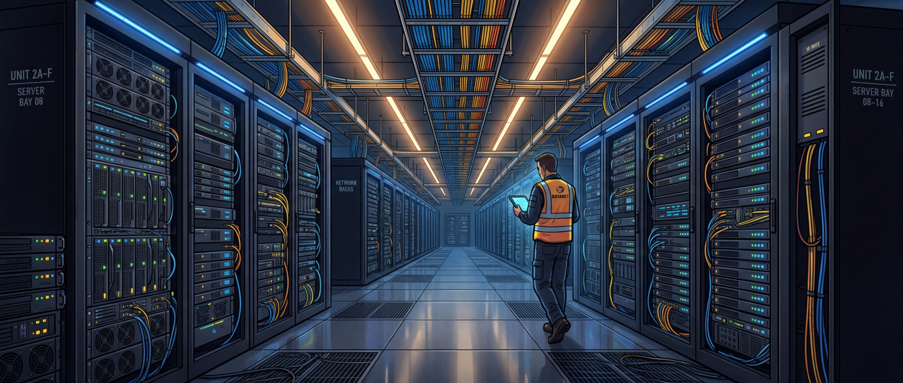

<!DOCTYPE html>
<html lang="en">
<head>
<meta charset="UTF-8">
<meta name="viewport" content="width=device-width, initial-scale=1.0, user-scalable=no">
<title>IB Troubleshooter</title>
<link rel="preconnect" href="https://fonts.googleapis.com">
<link href="https://fonts.googleapis.com/css2?family=DM+Sans:wght@400;500;700&family=Fraunces:opsz,wght@9..144,600;9..144,800&display=swap" rel="stylesheet">
<style>
  :root {
    --cream: #faf6f0;
    --cream-dark: #f0ebe3;
    --ink: #1c1917;
    --ink-light: #44403c;
    --ink-muted: #78716c;
    --amber: #d97706;
    --amber-light: #fef3c7;
    --red: #dc2626;
    --red-light: #fee2e2;
    --green: #16a34a;
    --green-light: #dcfce7;
    --blue: #2563eb;
    --blue-light: #dbeafe;
    --navy: #0f172a;
    --radius: 16px;
    --font-body: 'DM Sans', system-ui, sans-serif;
    --font-display: 'Fraunces', Georgia, serif;
  }
  * { margin: 0; padding: 0; box-sizing: border-box; }
  html, body { height: 100%; }
  body {
    font-family: var(--font-body);
    background: var(--cream);
    color: var(--ink);
    -webkit-font-smoothing: antialiased;
  }

  /* ── APP SHELL ── */
  .app {
    min-height: 100%; display: flex; flex-direction: column;
    max-width: 560px; margin: 0 auto;
    position: relative;
  }

  /* ── TOP BAR ── */
  .topbar {
    display: flex; align-items: center; gap: 12px;
    padding: 12px 20px; flex-shrink: 0;
    border-bottom: 1px solid rgba(28,25,23,0.06);
    background: var(--cream);
    position: sticky; top: 0; z-index: 10;
  }
  .topbar-title {
    font-family: var(--font-display); font-weight: 800;
    font-size: 1rem; color: var(--ink); flex: 1;
  }
  .btn-icon {
    width: 36px; height: 36px; border-radius: 10px;
    border: 1px solid rgba(28,25,23,0.1); background: white;
    display: flex; align-items: center; justify-content: center;
    cursor: pointer; font-size: 1.1rem; color: var(--ink-light);
    transition: all 0.15s; flex-shrink: 0;
  }
  .btn-icon:hover { background: var(--cream-dark); }
  .btn-icon:active { transform: scale(0.95); }

  /* ── PROGRESS BAR ── */
  .progress-bar {
    height: 4px; background: var(--cream-dark);
    position: sticky; top: 52px; z-index: 10;
  }
  .progress-fill {
    height: 100%; background: var(--amber);
    border-radius: 0 2px 2px 0;
    transition: width 0.4s cubic-bezier(0.16, 1, 0.3, 1);
  }

  /* ── STEP COUNTER ── */
  .step-counter {
    text-align: center; padding: 20px 20px 0;
    font-size: 0.7rem; font-weight: 700;
    text-transform: uppercase; letter-spacing: 0.1em;
    color: var(--amber);
  }

  /* ── SCREEN ── */
  .screen {
    padding: 12px 20px 24px;
    animation: fadeIn 0.35s cubic-bezier(0.16, 1, 0.3, 1) both;
  }
  @keyframes fadeIn {
    from { opacity: 0; transform: translateY(12px); }
    to { opacity: 1; transform: translateY(0); }
  }

  /* ── START SCREEN ── */
  .start-hero {
    border-radius: var(--radius); overflow: hidden;
    margin-bottom: 20px; position: relative;
    box-shadow: 0 2px 16px rgba(0,0,0,0.08);
  }
  .start-hero img {
    display: block; width: 100%; height: 180px;
    object-fit: cover; filter: brightness(0.5);
  }
  .start-hero-text {
    position: absolute; bottom: 0; left: 0; right: 0;
    padding: 40px 20px 16px; color: white;
    background: linear-gradient(to top, rgba(0,0,0,0.85) 0%, transparent 100%);
  }
  .start-hero-text h1 {
    font-family: var(--font-display); font-weight: 800;
    font-size: 1.5rem; margin-bottom: 2px;
  }
  .start-hero-text p { font-size: 0.85rem; opacity: 0.75; }

  .mode-cards { display: flex; flex-direction: column; gap: 12px; margin-bottom: 20px; }
  .mode-card {
    background: white; border-radius: var(--radius);
    padding: 18px 20px; cursor: pointer;
    border: 1px solid rgba(28,25,23,0.06);
    box-shadow: 0 1px 6px rgba(0,0,0,0.04);
    transition: all 0.15s;
    display: flex; gap: 14px; align-items: center;
    animation: cardUp 0.4s cubic-bezier(0.16, 1, 0.3, 1) both;
  }
  .mode-card:nth-child(1) { animation-delay: 0.05s; }
  .mode-card:nth-child(2) { animation-delay: 0.1s; }
  .mode-card:nth-child(3) { animation-delay: 0.15s; }
  .mode-card:nth-child(4) { animation-delay: 0.2s; }
  .mode-card:hover { transform: translateY(-1px); box-shadow: 0 4px 16px rgba(0,0,0,0.08); }
  .mode-card:active { transform: scale(0.98); }
  @keyframes cardUp {
    from { opacity: 0; transform: translateY(12px); }
    to { opacity: 1; transform: translateY(0); }
  }
  .mode-icon {
    width: 44px; height: 44px; border-radius: 12px;
    display: flex; align-items: center; justify-content: center;
    font-size: 1.3rem; flex-shrink: 0;
  }
  .mode-icon-red { background: var(--red-light); }
  .mode-icon-amber { background: var(--amber-light); }
  .mode-icon-blue { background: var(--blue-light); }
  .mode-card h3 {
    font-family: var(--font-display); font-weight: 600;
    font-size: 1rem; margin-bottom: 1px;
  }
  .mode-card p { font-size: 0.8rem; color: var(--ink-muted); }

  /* ── STEP CONTENT ── */
  .step-title {
    font-family: var(--font-display); font-weight: 800;
    font-size: clamp(1.2rem, 4vw, 1.5rem);
    color: var(--ink); line-height: 1.3;
    margin-bottom: 12px;
  }
  .step-body {
    font-size: 0.92rem; color: var(--ink-light);
    line-height: 1.7; margin-bottom: 16px;
  }
  .step-body strong { color: var(--ink); }
  .step-body code {
    background: var(--cream-dark); padding: 2px 7px;
    border-radius: 5px; font-family: 'SF Mono', 'Fira Code', monospace;
    font-size: 0.85em; color: var(--ink);
  }

  .step-image {
    border-radius: var(--radius); overflow: hidden;
    margin-bottom: 16px;
    box-shadow: 0 2px 12px rgba(0,0,0,0.08);
  }
  .step-image img { display: block; width: 100%; height: auto; }

  /* ── CALLOUT ── */
  .callout {
    border-radius: 12px; padding: 14px 16px;
    margin-bottom: 16px; font-size: 0.85rem;
    line-height: 1.6;
    display: flex; gap: 10px; align-items: flex-start;
  }
  .callout-icon { font-size: 1.1rem; flex-shrink: 0; }
  .callout-warn { background: var(--amber-light); border: 1px solid #fde68a; color: #92400e; }
  .callout-danger { background: var(--red-light); border: 1px solid #fca5a5; color: #991b1b; }
  .callout-info { background: var(--blue-light); border: 1px solid #93c5fd; color: #1e40af; }
  .callout-green { background: var(--green-light); border: 1px solid #86efac; color: #14532d; }
  .callout strong { font-weight: 700; }

  /* ── EXAMPLE BOX ── */
  .example {
    background: white; border: 1px solid rgba(28,25,23,0.06);
    border-radius: 12px; padding: 16px;
    margin-bottom: 16px; font-size: 0.88rem;
  }
  .example-label {
    font-size: 0.7rem; font-weight: 700; text-transform: uppercase;
    letter-spacing: 0.06em; color: var(--amber); margin-bottom: 6px;
  }
  .example code {
    background: var(--cream-dark); padding: 2px 7px;
    border-radius: 5px; font-family: 'SF Mono', 'Fira Code', monospace;
    font-size: 0.85em; color: var(--ink);
  }

  /* ── POD DIAGRAM ── */
  .pod-diagram {
    background: var(--navy); color: #94a3b8; border-radius: 12px;
    padding: 16px; font-family: 'SF Mono', 'Fira Code', monospace;
    font-size: clamp(0.55rem, 1.6vw, 0.72rem);
    line-height: 1.7; overflow-x: auto; white-space: pre;
    margin-bottom: 16px;
  }
  .pod-diagram .hl { color: #fbbf24; font-weight: 700; }
  .pod-diagram .dim { color: #475569; }
  .pod-diagram .row-num { color: #38bdf8; font-weight: 700; }

  /* ── PORT DIAGRAM ── */
  .port-diagram {
    background: var(--navy); color: #94a3b8; border-radius: 12px;
    padding: 16px; font-family: 'SF Mono', 'Fira Code', monospace;
    font-size: clamp(0.6rem, 1.7vw, 0.75rem);
    line-height: 1.8; overflow-x: auto; white-space: pre;
    margin-bottom: 16px;
  }
  .port-diagram .s1 { color: #38bdf8; }
  .port-diagram .s2 { color: #fbbf24; }
  .port-diagram .lbl { color: #e2e8f0; font-weight: 600; }
  .port-diagram .flip { color: #f87171; font-weight: 700; }

  /* ── BUTTONS ── */
  .nav-buttons {
    display: flex; gap: 10px; margin-top: auto; padding-top: 12px;
  }
  .btn {
    flex: 1; padding: 16px; border: none;
    border-radius: 14px; font-family: var(--font-body);
    font-size: 0.95rem; font-weight: 700; cursor: pointer;
    transition: all 0.15s; min-height: 54px;
    display: flex; align-items: center; justify-content: center; gap: 8px;
  }
  .btn:active { transform: scale(0.97); }
  .btn-primary { background: var(--ink); color: var(--cream); }
  .btn-primary:hover { opacity: 0.85; }
  .btn-secondary { background: white; color: var(--ink); border: 1px solid rgba(28,25,23,0.12); }
  .btn-secondary:hover { background: var(--cream-dark); }
  .btn-green { background: var(--green); color: white; }
  .btn-green:hover { background: #15803d; }
  .btn-red { background: var(--red); color: white; }
  .btn-red:hover { background: #b91c1c; }
  .btn-amber { background: var(--amber); color: white; }
  .btn-amber:hover { background: #b45309; }
  .btn-full { flex: none; width: 100%; }

  /* ── DECISION BUTTONS ── */
  .decision-btns {
    display: flex; flex-direction: column; gap: 10px;
    margin-top: 8px;
  }
  .decision-btns .btn { flex: none; }

  /* ── RESULT ── */
  .result-box {
    border-radius: var(--radius); padding: 28px 24px;
    text-align: center;
    animation: pop 0.4s cubic-bezier(0.16, 1, 0.3, 1) both;
    margin: 20px 0;
  }
  @keyframes pop {
    from { opacity: 0; transform: scale(0.92); }
    to { opacity: 1; transform: scale(1); }
  }
  .result-icon { font-size: 2.8rem; margin-bottom: 10px; }
  .result-title {
    font-family: var(--font-display); font-weight: 800;
    font-size: 1.3rem; margin-bottom: 6px;
  }
  .result-desc { font-size: 0.9rem; line-height: 1.6; margin-bottom: 16px; }
  .result-fixed { background: var(--green-light); color: #14532d; }
  .result-rma { background: var(--red-light); color: #7f1d1d; }
  .result-escalate { background: var(--amber-light); color: #78350f; }

  .start-footer {
    text-align: center; padding: 16px 0;
    font-size: 0.75rem; color: var(--ink-muted);
  }
  .start-footer a { color: var(--amber); text-decoration: none; }

  @media (prefers-reduced-motion: reduce) {
    .screen, .mode-card, .result-box { animation: none; }
    .progress-fill { transition: none; }
  }
</style>
</head>
<body>
<div class="app" id="app"></div>

<script>
// ═══════════════════════════════════════════
// STEP DEFINITIONS
// ═══════════════════════════════════════════

// Each flow is an array of step objects. Steps can be:
// - "content" — static instruction with Next button
// - "decision" — presents choices that branch
// - "result" — terminal screen

const FLOWS = {

// ─────────────────────────────────────────
// LOCATE & FIX — the main guided walkthrough
// ─────────────────────────────────────────
locate: {
  title: "Locate & Fix",
  steps: [
    // Step 1: Parse the entry
    {
      id: "parse",
      title: "Read the burndown entry",
      body: `Look at the row on the burndown sheet. You'll see something like:<br><br>
        <code>C1.17 17/2</code> should be connected to <code>S1.5.2 9/1</code> but is connected to <code>S1.5.2 10/1</code><br><br>
        This tells you <strong>two sides</strong> of one connection. We'll find <strong>Side A</strong> first, then <strong>Side B</strong>.`,
      example: { label: "Break it down", text: `<strong>Side A:</strong> <code>C1.17</code> port <code>17</code>, lane <code>/2</code> (slot 2 on the optic)<br>
        <strong>Side B:</strong> <code>S1.5.2</code> port <code>9</code>, lane <code>/1</code> (slot 1 on the optic)<br><br>
        The first letter tells you the switch type: <strong>C</strong> = Core, <strong>S</strong> = Spine, <strong>L</strong> = Leaf` },
      next: "find-pod"
    },
    // Step 2: Find the pod
    {
      id: "find-pod",
      title: "Find the pod on the overhead map",
      body: `Open the <strong>IB Sketch</strong> and go to the <strong>overhead tab</strong>. Find the pod that contains your switch type.<br><br>
        From our example, <code>C1.17</code> starts with <strong>C1</strong>. Look at the pod layout — you'll see which cabinets hold C1 switches.`,
      diagram: "pod",
      diagramCaption: `In this example, <strong>C1</strong> appears in cabs <strong>43 &amp; 44</strong>. The row number at the end is <strong>5</strong>.`,
      next: "go-to-row"
    },
    // Step 3: Go to the row
    {
      id: "go-to-row",
      title: "Walk to the row",
      body: `From the pod diagram, you found the <strong>row number</strong> (the number at the edge of the pod).<br><br>
        In our example, cabs 43 &amp; 44 are at the end of <strong>Row 5</strong>. Go to Row 5 on the data hall floor.`,
      callout: { type: "info", text: "The row number is printed on the end of each row on the floor. It matches the pod diagram." },
      next: "open-elevation"
    },
    // Step 4: Open the elevation tab
    {
      id: "open-elevation",
      title: "Open the elevation tab",
      body: `Back in the IB Sketch, click <strong>"All Sheets"</strong> (next to the overhead tab at the bottom). Scroll down to find the elevation tab for your row.<br><br>
        For our example (DH1, Row 5), select:<br>
        <strong>DH1 Row 5 ELEV: IB x 16A</strong>`,
      callout: { type: "info", text: "DH1 elevation tabs: Row 5, 6, or 22. DH2 elevation tabs: Row 13 or 14. Pick the one that matches your row." },
      next: "find-device"
    },
    // Step 5: Find the device in the elevation
    {
      id: "find-device",
      title: "Find your switch in the elevation",
      body: `The elevation tab shows rack diagrams for each cabinet in the row. Look at the cabinets you narrowed down earlier.<br><br>
        From our example, we're looking at cabs <strong>43 &amp; 44</strong> for <code>C1.17</code>. Scan both elevations — you'll find <strong>C1.17</strong> in <strong>cab 44</strong> as the first device.`,
      callout: { type: "warn", text: "Tip: Use Ctrl+F (or Cmd+F) and search for your switch name to find it fast." },
      next: "check-port"
    },
    // Step 6: Check the port
    {
      id: "check-port",
      title: "Verify the port",
      body: `Now you're at the right cabinet and device. Find the port from the burndown entry and check if the fiber is seated in the correct slot.<br><br>
        From our example: <code>C1.17 17/2</code> = port 17, <strong>slot 2</strong>.`,
      portDiagram: true,
      callout: { type: "danger", text: "Bottom row optics are FLIPPED. Slot 1 and 2 swap sides. Double-check before touching anything." },
      next: "side-b-intro"
    },
    // Step 7: Now do Side B
    {
      id: "side-b-intro",
      title: "Now find Side B",
      body: `You've located Side A. Now repeat the process for <strong>Side B</strong>.<br><br>
        From our example, Side B is <code>S1.5.2 9/1</code>. The <strong>S</strong> prefix means it's a Spine switch.<br><br>
        Spines are in <strong>DH2</strong>. Open the IB Sketch, click <strong>All Sheets</strong>, and look at:<br>
        <strong>DH2 Row 13 ELEV</strong> or <strong>DH2 Row 14 ELEV</strong>`,
      example: { label: "Side B lookup", text: `Search both DH2 elevation tabs for <code>S1.5.2</code>.<br><br>
        You'll find it in <strong>DH2 Row 14 ELEV</strong>, cab <strong>138</strong>, device 2.<br><br>
        Now locate port <code>9/1</code> (port 9, slot 1) on that device.` },
      next: "both-located"
    },
    // Step 8: Both sides located — what's the issue?
    {
      id: "both-located",
      title: "Both sides located. What's the issue?",
      body: `You've found both ends of the connection. Now pick the issue type from the burndown sheet to start troubleshooting.`,
      type: "decision",
      choices: [
        { label: "Port Down — no signal", btnClass: "btn-red", goto: "ts-portdown-1" },
        { label: "BER — link up but dirty signal", btnClass: "btn-amber", goto: "ts-ber-1" },
        { label: "Misconnect — cable in wrong port", btnClass: "btn-primary", goto: "ts-misconnect-1" },
      ]
    },

    // ── PORT DOWN TROUBLESHOOTING ──
    {
      id: "ts-portdown-1",
      title: "IR card check — Side A",
      body: `Pull the fiber from Side A. Hold your <strong>IR detector card</strong> up to the fiber tip. Do you see a pink/purple glow?`,
      image: "img/ir-card-check.png",
      callout: { type: "info", text: "The IR card detects invisible infrared light. A glow means the optic on this side is transmitting." },
      type: "decision",
      choices: [
        { label: "Yes — I see light", btnClass: "btn-green", goto: "ts-pd-a-light-b" },
        { label: "No light", btnClass: "btn-red", goto: "ts-pd-a-nolight-b" },
      ]
    },
    {
      id: "ts-pd-a-light-b",
      title: "Side A has light. Check Side B.",
      body: `Side A optic is transmitting. Now go to <strong>Side B</strong> and IR card that fiber. Light?`,
      image: "img/two-racks-connected.png",
      type: "decision",
      choices: [
        { label: "Yes — Side B has light too", btnClass: "btn-green", goto: "ts-pd-both-light" },
        { label: "No light on Side B", btnClass: "btn-red", goto: "ts-pd-loopback-b" },
      ]
    },
    {
      id: "ts-pd-both-light",
      title: "Both sides send light. Clean & reseat.",
      body: `Both optics are transmitting but the link is down. Most likely cause: <strong>dirt</strong>. Clean and reseat both fibers. LED come up?`,
      type: "decision",
      choices: [
        { label: "LED is up — fixed!", btnClass: "btn-green", goto: "result-fixed-dirty" },
        { label: "Still no LED", btnClass: "btn-red", goto: "ts-pd-swap-cable" },
      ]
    },
    {
      id: "ts-pd-swap-cable",
      title: "Clean didn't help. Swap the cable.",
      body: `Dirt wasn't the issue. Try a <strong>known-good cable</strong>. LED come up?`,
      type: "decision",
      choices: [
        { label: "LED up — bad cable", btnClass: "btn-green", goto: "result-bad-cable" },
        { label: "Still no LED", btnClass: "btn-red", goto: "ts-pd-loopback-both" },
      ]
    },
    {
      id: "ts-pd-loopback-both",
      title: "Cable swap didn't help. Loopback both sides.",
      body: `Insert a loopback adapter into each optic. If the LED comes up, that optic is healthy.`,
      image: "img/loopback-test.png",
      type: "decision",
      choices: [
        { label: "Both PASS", btnClass: "btn-green", goto: "result-escalate-config" },
        { label: "One or both FAIL", btnClass: "btn-red", goto: "result-rma-optic" },
      ]
    },
    {
      id: "ts-pd-loopback-b",
      title: "Side B has no light. Loopback Side B.",
      body: `Side A is fine, but Side B doesn't transmit. Loopback test the <strong>Side B</strong> optic.`,
      image: "img/loopback-test.png",
      type: "decision",
      choices: [
        { label: "PASS — optic OK", btnClass: "btn-green", goto: "result-bad-cable" },
        { label: "FAIL — optic dead", btnClass: "btn-red", goto: "result-rma-b" },
      ]
    },
    {
      id: "ts-pd-a-nolight-b",
      title: "Side A has no light. Check Side B.",
      body: `Side A isn't sending. Go check Side B with the IR card. Light?`,
      image: "img/two-racks-connected.png",
      type: "decision",
      choices: [
        { label: "Yes — Side B has light", btnClass: "btn-green", goto: "ts-pd-loopback-a" },
        { label: "No light on Side B either", btnClass: "btn-red", goto: "ts-pd-loopback-both-from-none" },
      ]
    },
    {
      id: "ts-pd-loopback-a",
      title: "Only Side B has light. Loopback Side A.",
      body: `Side B is fine but Side A isn't sending. Loopback test <strong>Side A</strong>.`,
      image: "img/loopback-test.png",
      type: "decision",
      choices: [
        { label: "PASS — optic OK", btnClass: "btn-green", goto: "result-bad-cable" },
        { label: "FAIL — optic dead", btnClass: "btn-red", goto: "result-rma-a" },
      ]
    },
    {
      id: "ts-pd-loopback-both-from-none",
      title: "Neither side has light. Loopback both.",
      body: `Neither optic is transmitting. Loopback test both to find out which one is dead.`,
      image: "img/loopback-test.png",
      type: "decision",
      choices: [
        { label: "Both PASS", btnClass: "btn-green", goto: "result-bad-cable" },
        { label: "One or both FAIL", btnClass: "btn-red", goto: "result-rma-optic" },
      ]
    },

    // ── BER TROUBLESHOOTING ──
    {
      id: "ts-ber-1",
      title: "Clean & reseat both sides",
      body: `BER means the signal is dirty. Start with a <strong>standard clean</strong> on both fiber tips and optics. Reseat. BER cleared?`,
      type: "decision",
      choices: [
        { label: "Yes — BER cleared", btnClass: "btn-green", goto: "result-fixed-dirty" },
        { label: "No — still showing BER", btnClass: "btn-red", goto: "ts-ber-2" },
      ]
    },
    {
      id: "ts-ber-2",
      title: "Deep clean — IPA + canned air",
      body: `Standard clean wasn't enough. Do an <strong>IPA wipe + canned air</strong> on both optics and fiber tips, both sides. BER cleared?`,
      type: "decision",
      choices: [
        { label: "Yes — BER cleared", btnClass: "btn-green", goto: "result-fixed-deepclean" },
        { label: "Still showing BER", btnClass: "btn-red", goto: "ts-ber-3" },
      ]
    },
    {
      id: "ts-ber-3",
      title: "Swap the cable",
      body: `Cleaning didn't fix it. Try a <strong>known-good cable</strong>. BER cleared?`,
      type: "decision",
      choices: [
        { label: "Yes — BER cleared", btnClass: "btn-green", goto: "result-bad-cable" },
        { label: "BER persists", btnClass: "btn-red", goto: "result-rma-degraded" },
      ]
    },

    // ── MISCONNECT TROUBLESHOOTING ──
    {
      id: "ts-misconnect-1",
      title: "Verify the cutsheet",
      body: `The burndown says the cable "should be" in a certain port. Does this match what the <strong>IB Sketch</strong> cutsheet shows?`,
      callout: { type: "danger", text: "If the burndown and cutsheet disagree, do NOT move the cable. Something is wrong upstream." },
      type: "decision",
      choices: [
        { label: "Yes — cutsheet confirms", btnClass: "btn-green", goto: "ts-mc-port-empty" },
        { label: "No — they don't match", btnClass: "btn-red", goto: "result-escalate-cutsheet" },
      ]
    },
    {
      id: "ts-mc-port-empty",
      title: "Is the correct port empty?",
      body: `Look at the port where the cable <em>should</em> go. Is it empty and available?`,
      callout: { type: "warn", text: "Slot flip reminder: if the target port is on the BOTTOM row, slot 1 is on the RIGHT." },
      type: "decision",
      choices: [
        { label: "Yes — it's empty", btnClass: "btn-green", goto: "ts-mc-move" },
        { label: "No — something is already there", btnClass: "btn-red", goto: "ts-mc-chain" },
      ]
    },
    {
      id: "ts-mc-move",
      title: "Move the cable",
      body: `Move the cable to the correct port. Double-check the slot (top row: 1|2, bottom row: 2|1). LED come up?`,
      portDiagram: true,
      type: "decision",
      choices: [
        { label: "LED up — fixed!", btnClass: "btn-green", goto: "result-fixed-moved" },
        { label: "No LED", btnClass: "btn-red", goto: "result-now-portdown" },
      ]
    },
    {
      id: "ts-mc-chain",
      title: "Chain misconnect",
      body: `The correct port is occupied. That means <strong>multiple cables are in wrong ports</strong>. Trace the cable that's in your target port — where does it go?<br><br>
        <strong>Map out every cable that needs to move before unplugging anything.</strong>`,
      callout: { type: "warn", text: "Write down each move: cable X from port A to port B, cable Y from port C to port D. Execute in order." },
      type: "decision",
      choices: [
        { label: "I've mapped all moves — executing", btnClass: "btn-green", goto: "result-fixed-chain" },
        { label: "It's too tangled — need help", btnClass: "btn-amber", goto: "result-escalate-chain" },
      ]
    },

    // ── RESULTS ──
    { id: "result-fixed-dirty", type: "result", resultType: "fixed", title: "Fixed — was dirty", desc: "Clean resolved it. Mark the row on the burndown sheet." },
    { id: "result-fixed-deepclean", type: "result", resultType: "fixed", title: "Fixed — needed deep clean", desc: "IPA + canned air got it. Mark the sheet." },
    { id: "result-bad-cable", type: "result", resultType: "fixed", title: "Bad cable", desc: "The cable was the problem. Replace it permanently and mark the sheet." },
    { id: "result-rma-optic", type: "result", resultType: "rma", title: "Bad optic — RMA", desc: "The optic that failed loopback is dead. RMA it. If both failed, try fresh optics — if those also fail on the same port, the switch port is dead (escalate)." },
    { id: "result-rma-a", type: "result", resultType: "rma", title: "RMA Side A optic", desc: "Side A optic failed the loopback. RMA it. After replacing, verify the link." },
    { id: "result-rma-b", type: "result", resultType: "rma", title: "RMA Side B optic", desc: "Side B optic failed the loopback. RMA it. After replacing, verify the link." },
    { id: "result-rma-degraded", type: "result", resultType: "rma", title: "Optic degraded — RMA", desc: "Clean and cable swap didn't help. The optic is degraded. Loopback both to find which side, then RMA." },
    { id: "result-escalate-config", type: "result", resultType: "escalate", title: "Escalate — config issue", desc: "Both optics and cable are good but no link. Comment on the sheet with your test results and flag to networking." },
    { id: "result-escalate-cutsheet", type: "result", resultType: "escalate", title: "Don't touch it", desc: "Burndown and cutsheet disagree. Do NOT move the cable. Comment on the sheet noting the discrepancy and flag to networking." },
    { id: "result-escalate-chain", type: "result", resultType: "escalate", title: "Escalate the chain", desc: "Comment on the sheet with what you've traced so far — which ports are involved and what's currently plugged where. Flag to networking." },
    { id: "result-fixed-moved", type: "result", resultType: "fixed", title: "Fixed — cable moved", desc: "Cable is in the correct port and link is up. Mark the sheet." },
    { id: "result-fixed-chain", type: "result", resultType: "fixed", title: "Chain resolved", desc: "All cables moved to correct ports. Check LEDs on every link. Mark each resolved row on the sheet." },
    { id: "result-now-portdown", type: "result", resultType: "escalate", title: "Now it's a Port Down", desc: "Cable is in the right port but won't link. Go back and run the Port Down troubleshooting for this connection." },
  ]
}
};

// ═══════════════════════════════════════════
// STATE
// ═══════════════════════════════════════════

let currentFlow = null;
let currentStepIdx = 0;
let stepHistory = []; // stack of step indices for Back

const app = document.getElementById('app');

// ═══════════════════════════════════════════
// RENDER HELPERS
// ═══════════════════════════════════════════

function getStep(id) {
  return currentFlow.steps.find(s => s.id === id);
}

function getStepIndex(id) {
  return currentFlow.steps.findIndex(s => s.id === id);
}

function totalContentSteps() {
  // Count non-result steps for progress bar
  return currentFlow.steps.filter(s => s.type !== 'result').length;
}

function currentContentStepNum() {
  let count = 0;
  for (let i = 0; i <= currentStepIdx; i++) {
    if (currentFlow.steps[i].type !== 'result') count++;
  }
  return count;
}

function renderPodDiagram() {
  return `<div class="pod-diagram">` +
`<span class="dim">Cab:</span>  41   42   <span class="hl">43</span>   <span class="hl">44</span>   45   46   47   48   49   50
       ┌────┬────┬────┬────┬────┬────┬────┬────┬────┬────┐
       │S1  │S3  │<span class="hl">C1</span>  │<span class="hl">C1</span>  │C2  │C2  │C3  │C3  │C4  │C4  │  Row <span class="row-num">5</span>
       │S2.1│S4.1│    │    │    │    │    │    │    │    │
       └────┴────┴────┴────┴────┴────┴────┴────┴────┴────┘

<span class="dim">Cab:</span>  60   59   58   57   56   55   54   53   52   51
       ┌────┬────┬────┬────┬────┬────┬────┬────┬────┬────┐
       │S5  │S7  │C5  │C5  │C6  │C6  │C7  │C7  │C8  │C8  │  Row <span class="row-num">6</span>
       │S6.1│S8.1│    │    │    │    │    │    │    │    │
       └────┴────┴────┴────┴────┴────┴────┴────┴────┴────┘</div>`;
}

function renderPortDiagram() {
  return `<div class="port-diagram"><span class="lbl">Top Row (normal):</span>
  │<span class="s1"> /1 </span>│<span class="s2"> /2 </span>│  │<span class="s1"> /1 </span>│<span class="s2"> /2 </span>│

<span class="lbl">Bottom Row</span> <span class="flip">FLIPPED:</span>
  │<span class="s2"> /2 </span>│<span class="s1"> /1 </span>│  │<span class="s2"> /2 </span>│<span class="s1"> /1 </span>│</div>`;
}

// ═══════════════════════════════════════════
// RENDER SCREENS
// ═══════════════════════════════════════════

function showStart() {
  currentFlow = null;
  stepHistory = [];

  app.innerHTML = `
    <div class="topbar">
      <span class="topbar-title">IB Troubleshooter</span>
    </div>
    <div class="screen">
      <div class="start-hero">
        
        <div class="start-hero-text">
          <h1>IB Burndown Guide</h1>
          <p>EVI01 &middot; US-CENTRAL-07A</p>
        </div>
      </div>
      <div class="mode-cards">
        <div class="mode-card" onclick="startFlow('locate')">
          <div class="mode-icon mode-icon-blue">&#128270;</div>
          <div>
            <h3>Locate &amp; Fix</h3>
            <p>Full walkthrough — find the switch, then troubleshoot</p>
          </div>
        </div>
        <div class="mode-card" onclick="jumpTo('locate','both-located')">
          <div class="mode-icon mode-icon-red">&#9889;</div>
          <div>
            <h3>I already found both sides</h3>
            <p>Skip to troubleshooting (Port Down / BER / Misconnect)</p>
          </div>
        </div>
      </div>
      <div class="start-footer">
        <a href="visual-sop.html">Full Field Guide</a> &middot; EVI01
      </div>
    </div>
  `;
}

function startFlow(key) {
  currentFlow = FLOWS[key];
  currentStepIdx = 0;
  stepHistory = [];
  renderStep();
}

function jumpTo(flowKey, stepId) {
  currentFlow = FLOWS[flowKey];
  currentStepIdx = getStepIndex(stepId);
  stepHistory = [];
  renderStep();
}

function goToStep(stepId) {
  stepHistory.push(currentStepIdx);
  currentStepIdx = getStepIndex(stepId);
  renderStep();
}

function nextStep() {
  const step = currentFlow.steps[currentStepIdx];
  if (step.next) {
    goToStep(step.next);
  }
}

function goBack() {
  if (stepHistory.length === 0) {
    showStart();
    return;
  }
  currentStepIdx = stepHistory.pop();
  renderStep();
}

function renderStep() {
  const step = currentFlow.steps[currentStepIdx];
  if (!step) { showStart(); return; }

  if (step.type === 'result') {
    renderResult(step);
    return;
  }

  const total = totalContentSteps();
  const current = currentContentStepNum();
  const pct = Math.round((current / total) * 100);

  let bodyHtml = '';

  // Image
  if (step.image) {
    bodyHtml += `<div class="step-image"></div>`;
  }

  // Title & body
  bodyHtml += `<div class="step-title">${step.title}</div>`;
  bodyHtml += `<div class="step-body">${step.body}</div>`;

  // Example box
  if (step.example) {
    bodyHtml += `<div class="example"><div class="example-label">${step.example.label}</div>${step.example.text}</div>`;
  }

  // Pod diagram
  if (step.diagram === 'pod') {
    bodyHtml += renderPodDiagram();
    if (step.diagramCaption) {
      bodyHtml += `<div class="step-body">${step.diagramCaption}</div>`;
    }
  }

  // Port diagram
  if (step.portDiagram) {
    bodyHtml += renderPortDiagram();
  }

  // Callout
  if (step.callout) {
    const icons = { warn: '!', danger: '!', info: 'i', green: '\u2713' };
    bodyHtml += `<div class="callout callout-${step.callout.type}">
      <span class="callout-icon">${icons[step.callout.type] || 'i'}</span>
      <div>${step.callout.text}</div>
    </div>`;
  }

  // Buttons
  if (step.type === 'decision') {
    bodyHtml += `<div class="decision-btns">`;
    step.choices.forEach(c => {
      bodyHtml += `<button class="btn ${c.btnClass}" onclick="goToStep('${c.goto}')">${c.label}</button>`;
    });
    bodyHtml += `</div>`;
  } else if (step.next) {
    bodyHtml += `<div class="nav-buttons">
      <button class="btn btn-primary btn-full" onclick="nextStep()">Next &rarr;</button>
    </div>`;
  }

  app.innerHTML = `
    <div class="topbar">
      <button class="btn-icon" onclick="goBack()">&#8592;</button>
      <span class="topbar-title">${currentFlow.title}</span>
      <button class="btn-icon" onclick="showStart()">&#8962;</button>
    </div>
    <div class="progress-bar"><div class="progress-fill" style="width:${pct}%"></div></div>
    <div class="step-counter">Step ${current} of ${total}</div>
    <div class="screen">${bodyHtml}</div>
  `;
}

function renderResult(step) {
  const icons = { fixed: '\u2705', rma: '\u274C', escalate: '\u26A0\uFE0F' };

  app.innerHTML = `
    <div class="topbar">
      <button class="btn-icon" onclick="goBack()">&#8592;</button>
      <span class="topbar-title">${currentFlow.title}</span>
      <button class="btn-icon" onclick="showStart()">&#8962;</button>
    </div>
    <div class="progress-bar"><div class="progress-fill" style="width:100%"></div></div>
    <div class="screen">
      <div class="result-box result-${step.resultType}">
        <div class="result-icon">${icons[step.resultType] || ''}</div>
        <div class="result-title">${step.title}</div>
        <div class="result-desc">${step.desc}</div>
        <button class="btn btn-primary btn-full" onclick="showStart()" style="margin-top:8px;">
          &larr; Start Over
        </button>
      </div>
    </div>
  `;
}

// ═══════════════════════════════════════════
// INIT
// ═══════════════════════════════════════════
showStart();
</script>
</body>
</html>
